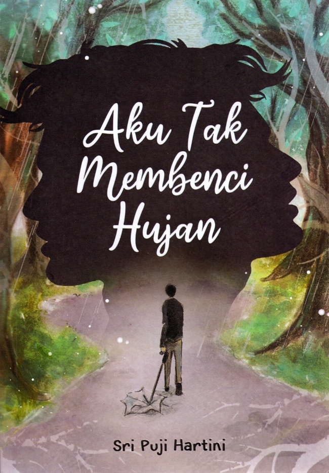
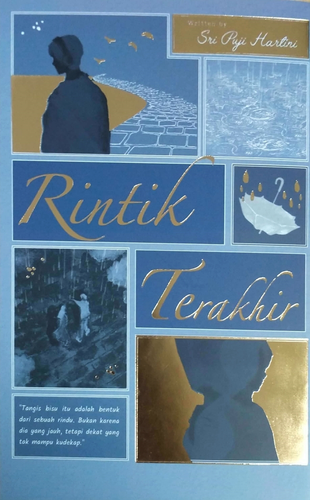
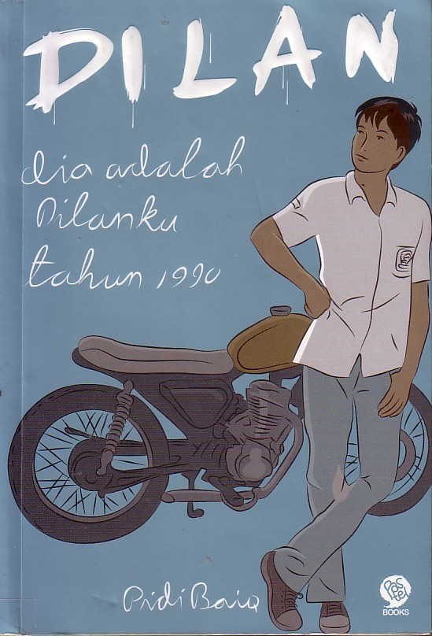
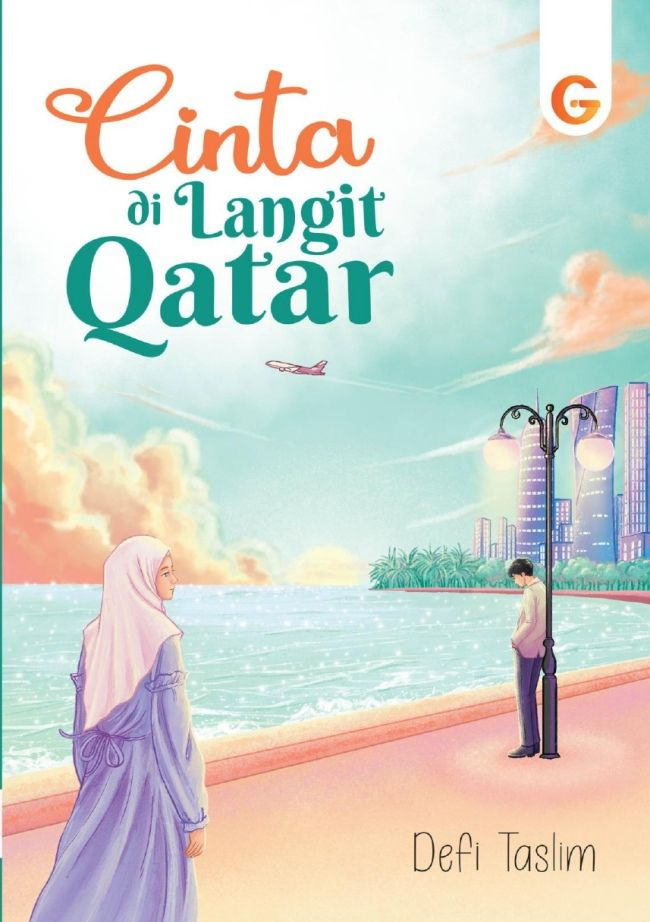

NEZHA MAULANA EMERALDO
Keep going against current, only trash and dead fish keep going with the current.
Keep going against current, only trash and dead fish keep going with the current.
| Judul Buku | Pengarang | Foto | Detail |
|---|---|---|---|
| Aku Tak Membenci Hujan | Sri Puji Hartini |  | Detail |
| Perahu Kertas | Dewi Lestari |  | Detail |
| Laskar Pelangi | Andrea Hirata |  |
Detail |
| Negeri 5 Menara | Ahmad Fuadi |  | Detail |
| Ayat-Ayat Cinta | Habiburrahman El Shirazy |  | Detail |
|
Aku Tak Membenci Hujan Pengarang: Sri Puji Hartini Sinopsis: Mengisahkan tentang seorang Karang yang memiliki kepribadian ganda dan perjuangannya dalam menghadapi konflik batin serta penerimaan diri. Kembali ke atas |
|
|
Perahu Kertas Pengarang: Dewi Lestari Sinopsis: Kisah cinta antara Kugy dan Keenan yang penuh liku, diwarnai dengan impian dan realita kehidupan yang harus mereka hadapi bersama. Kembali ke atas |
|
|
Laskar Pelangi Pengarang: Andrea Hirata Sinopsis: Cerita inspiratif tentang sekelompok anak-anak dari Belitung yang berjuang untuk mendapatkan pendidikan di tengah keterbatasan. Kembali ke atas |
|
Negeri 5 Menara Pengarang: Ahmad Fuadi Sinopsis: Perjalanan enam santri di Pondok Madani yang penuh semangat dan mimpi besar untuk menaklukkan dunia. Kembali ke atas |
|